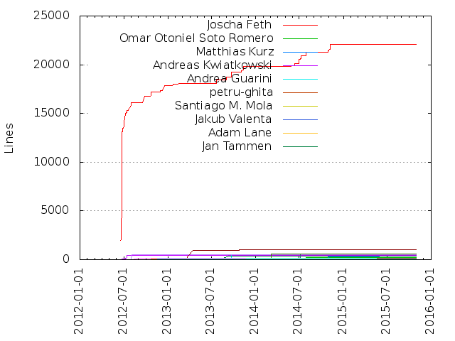
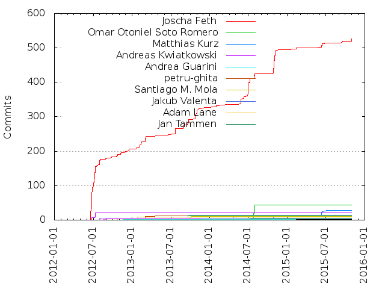

Authors
| Author | Commits (%) | + lines | - lines | First commit | Last commit | Age | Active days | # by commits |
|---|
| Joscha Feth | 526 (71.56%) | 22102 | 12916 | 2012-06-18 | 2015-10-30 | 1229 days, 8:39:31 | 111 | 1 |
| Omar Otoniel Soto Romero | 43 (5.85%) | 213 | 210 | 2014-07-14 | 2014-07-30 | 15 days, 16:55:12 | 4 | 2 |
| Matthias Kurz | 28 (3.81%) | 481 | 119 | 2014-10-20 | 2015-07-03 | 255 days, 17:49:13 | 11 | 3 |
| Andreas Kwiatkowski | 21 (2.86%) | 423 | 260 | 2012-06-24 | 2012-07-12 | 18 days, 4:16:39 | 3 | 4 |
| Andrea Guarini | 14 (1.90%) | 512 | 165 | 2013-09-20 | 2013-09-22 | 1 day, 21:05:16 | 2 | 5 |
| petru-ghita | 12 (1.63%) | 41 | 38 | 2013-02-11 | 2013-04-18 | 66 days, 5:46:25 | 5 | 6 |
| Santiago M. Mola | 10 (1.36%) | 82 | 55 | 2013-03-06 | 2013-10-03 | 211 days, 8:42:04 | 4 | 7 |
| Jakub Valenta | 8 (1.09%) | 105 | 112 | 2014-04-24 | 2014-04-24 | 0:25:42 | 1 | 8 |
| Adam Lane | 8 (1.09%) | 125 | 69 | 2012-10-22 | 2013-01-25 | 94 days, 8:57:32 | 3 | 9 |
| Jan Tammen | 6 (0.82%) | 335 | 32 | 2013-08-27 | 2013-09-17 | 21 days, 3:15:57 | 3 | 10 |
| Marcus Biesioroff | 5 (0.68%) | 524 | 154 | 2012-08-01 | 2012-08-03 | 1 day, 21:59:59 | 2 | 11 |
| Keyur | 5 (0.68%) | 595 | 372 | 2014-07-05 | 2014-07-08 | 3 days, 6:43:21 | 3 | 12 |
| Tim Dettrick | 4 (0.54%) | 1026 | 70 | 2013-04-15 | 2013-10-27 | 194 days, 22:35:00 | 4 | 13 |
| Florian Hars | 4 (0.54%) | 549 | 11 | 2013-12-04 | 2014-03-05 | 90 days, 18:32:16 | 3 | 14 |
| Pierre Andrews | 3 (0.41%) | 163 | 7 | 2012-08-27 | 2012-08-27 | 1:02:29 | 1 | 15 |
| Naruhiko Ogasawara | 3 (0.41%) | 158 | 1 | 2013-11-22 | 2013-11-22 | 0:09:39 | 1 | 16 |
| ibnuda | 2 (0.27%) | 161 | 0 | 2015-05-21 | 2015-05-21 | 1:33:40 | 1 | 17 |
| Rui Ferreira | 2 (0.27%) | 3 | 2 | 2014-07-24 | 2014-07-28 | 3 days, 20:50:59 | 2 | 18 |
| Ondřej Kroupa | 2 (0.27%) | 49 | 52 | 2012-11-25 | 2012-11-25 | 0:03:33 | 1 | 19 |
| Kevin Kuhl | 2 (0.27%) | 20 | 1 | 2015-02-11 | 2015-02-11 | 0:12:17 | 1 | 20 |
These didn't make it to the top: J Levitt, Evgeniy Goryuchkin, Enalmada, Alex, biesior, Xavier Jodoin, Vladimir Lopato, Vasco Mouta, Traian Fratean, Rafael Alves, Petru Ghita, Matthieu Guillermin, Ludovic ROBINOT, Ibnu Daru Aji, Hugo Bandeira Tavares, Federico Frappi, Didier Bathily, Denis Borisenko, David Ribba, Chris Sweigard, Brecht De Meulenaere, Ben Carlson, Anton Sarov
Only top 20 authors shown
Only top 20 authors shown
| Month | Author | Commits (%) | Next top 5 | Number of authors |
|---|
| 2015-10 | Joscha Feth | 7 (100.00% of 7) | | 1 |
| 2015-09 | Joscha Feth | 5 (71.43% of 7) | J Levitt | 2 |
| 2015-07 | Matthias Kurz | 2 (100.00% of 2) | | 1 |
| 2015-06 | Matthias Kurz | 13 (52.00% of 25) | Joscha Feth | 2 |
| 2015-05 | ibnuda | 2 (66.67% of 3) | Joscha Feth | 2 |
| 2015-03 | Vasco Mouta | 1 (25.00% of 4) | Matthias Kurz, Joscha Feth, Ibnu Daru Aji | 4 |
| 2015-02 | Joscha Feth | 4 (57.14% of 7) | Kevin Kuhl, Brecht De Meulenaere | 3 |
| 2015-01 | Joscha Feth | 1 (50.00% of 2) | Anton Sarov | 2 |
| 2014-11 | Joscha Feth | 32 (96.97% of 33) | Matthias Kurz | 2 |
| 2014-10 | Joscha Feth | 38 (77.55% of 49) | Matthias Kurz | 2 |
| 2014-09 | Denis Borisenko | 1 (100.00% of 1) | | 1 |
| 2014-07 | Omar Otoniel Soto Romero | 43 (55.13% of 78) | Joscha Feth, Keyur, Rui Ferreira, Hugo Bandeira Tavares | 5 |
| 2014-06 | Joscha Feth | 46 (97.87% of 47) | Rafael Alves | 2 |
| 2014-05 | Joscha Feth | 17 (94.44% of 18) | Traian Fratean | 2 |
| 2014-04 | Jakub Valenta | 8 (100.00% of 8) | | 1 |
| 2014-03 | Joscha Feth | 2 (50.00% of 4) | Florian Hars | 2 |
| 2014-02 | Joscha Feth | 2 (100.00% of 2) | | 1 |
| 2014-01 | Joscha Feth | 4 (100.00% of 4) | | 1 |
| 2013-12 | Florian Hars | 2 (66.67% of 3) | Joscha Feth | 2 |
| 2013-11 | Joscha Feth | 18 (85.71% of 21) | Naruhiko Ogasawara | 2 |
| 2013-10 | Joscha Feth | 16 (66.67% of 24) | Santiago M. Mola, Tim Dettrick, Vladimir Lopato, David Ribba | 5 |
| 2013-09 | Joscha Feth | 26 (57.78% of 45) | Andrea Guarini, Jan Tammen, Evgeniy Goryuchkin, Santiago M. Mola | 5 |
| 2013-08 | Jan Tammen | 4 (80.00% of 5) | Chris Sweigard | 2 |
| 2013-07 | Joscha Feth | 17 (100.00% of 17) | | 1 |
| 2013-06 | Joscha Feth | 2 (66.67% of 3) | Xavier Jodoin | 2 |
| 2013-05 | Joscha Feth | 1 (100.00% of 1) | | 1 |
| 2013-04 | Tim Dettrick | 2 (28.57% of 7) | Joscha Feth, Alex, petru-ghita | 4 |
| 2013-03 | Joscha Feth | 17 (60.71% of 28) | petru-ghita, Santiago M. Mola | 3 |
| 2013-02 | Joscha Feth | 16 (69.57% of 23) | petru-ghita, Petru Ghita, Federico Frappi | 4 |
| 2013-01 | Joscha Feth | 5 (55.56% of 9) | Adam Lane, Didier Bathily | 3 |
| 2012-12 | Joscha Feth | 6 (85.71% of 7) | Ludovic ROBINOT | 2 |
| 2012-11 | Joscha Feth | 10 (71.43% of 14) | Ondřej Kroupa, biesior, Ben Carlson | 4 |
| 2012-10 | Joscha Feth | 7 (58.33% of 12) | Adam Lane | 2 |
| 2012-09 | Joscha Feth | 4 (100.00% of 4) | | 1 |
| 2012-08 | Joscha Feth | 6 (42.86% of 14) | Marcus Biesioroff, Pierre Andrews | 3 |
| 2012-07 | Joscha Feth | 76 (83.52% of 91) | Andreas Kwiatkowski, Matthieu Guillermin | 3 |
| 2012-06 | Joscha Feth | 97 (91.51% of 106) | Andreas Kwiatkowski, Enalmada | 3 |
| Year | Author | Commits (%) | Next top 5 | Number of authors |
|---|
| 2015 | Joscha Feth | 31 (54.39% of 57) | Matthias Kurz, ibnuda, Kevin Kuhl, J Levitt, Vasco Mouta | 9 |
| 2014 | Joscha Feth | 168 (68.85% of 244) | Omar Otoniel Soto Romero, Matthias Kurz, Jakub Valenta, Keyur, Rui Ferreira | 11 |
| 2013 | Joscha Feth | 121 (65.05% of 186) | Andrea Guarini, petru-ghita, Santiago M. Mola, Jan Tammen, Tim Dettrick | 18 |
| 2012 | Joscha Feth | 206 (83.06% of 248) | Andreas Kwiatkowski, Marcus Biesioroff, Adam Lane, Pierre Andrews, Ondřej Kroupa | 11 |
| Domains | Total (%) |
|---|
| feth.com | 526 (71.56%) |
|---|
| gmail.com | 59 (8.03%) |
|---|
| irregular.at | 28 (3.81%) |
|---|
| um.edu.mx | 24 (3.27%) |
|---|
| yahoo.de | 21 (2.86%) |
|---|
| users.noreply.github.com | 19 (2.59%) |
|---|
| hotmail.it | 14 (1.90%) |
|---|
| bitsnbrains.net | 10 (1.36%) |
|---|
| tammen.net | 6 (0.82%) |
|---|
| biesioroff.com | 5 (0.68%) |
|---|